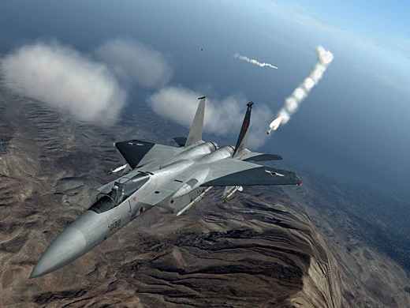
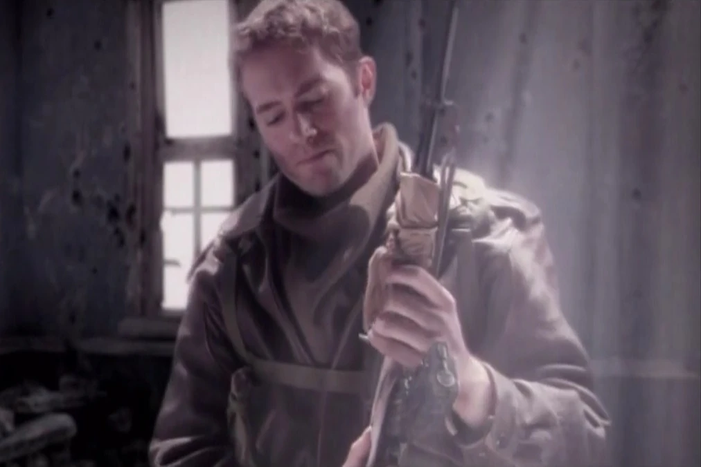
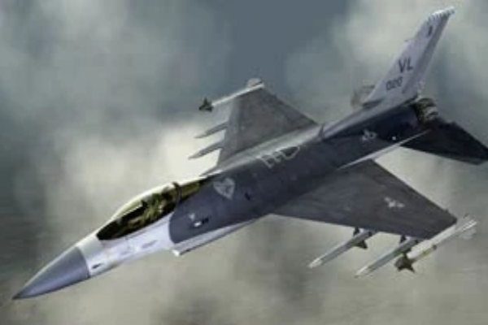
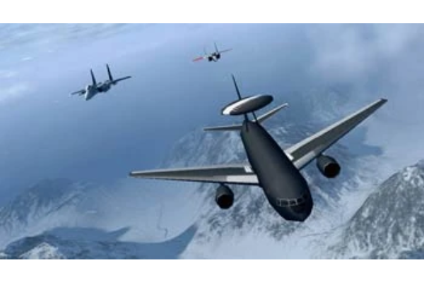

Cipher was a mercenary pilot employed by the Ustio Air Force's 6th Air Division. He was the flight leader of Galm Team and primarily led the squadron during the Belkan War of 1995. Cipher is the player character in Ace Combat Zero: The Belkan War. His signature aircraft is the F-15C Eagle.
Cipher is well known for having an extraordinarily high number of kills, which earned him the nickname "Demon Lord of the Round Table".

Second Lieutenant Larry Foulke, callsign Pixy and nicknamed "Solo Wing", was a Belkan mercenary pilot employed by Ustio during the Belkan War. He is best known for his service as Galm Team's number two and later as a member of the paramilitary terrorist organization A World With No Boundaries.
Foulke was an experienced pilot whose skills were well known among his fellow mercenaries. He was deeply affected by the ravages inflicted on both sides during the war; after witnessing the seven nuclear detonations on June 6, 1995, he went AWOL and defected to A World With No Boundaries.
Foulke was shot down over the Avalon Dam facility during his final encounter with his former wingman and flight leader, Cipher. Although injured, he survived the confrontation and later returned to mercenary service on battlefields around the world.

Second Lieutenant Patrick James Beckett, TAC name and common nickname PJ, was an Osean mercenary pilot who served in the Belkan War. He was originally assigned to the Ustio Air Force 6th Air Division's Crow Team; however, following Operation Ravage, he was officially transferred to the Galm Team.As part of Galm Team, PJ flew under the position of "Galm 2" with Cipher as his flight lead.
He was killed by Larry Foulke on December 31, 1995 over the Avalon Dam during Operation Point Blank.

AWACS Eagle Eye was the callsign of an Ustio Air Force AWACS during and after the Belkan War. As an AWACS, Eagle Eye's primary role was providing tactical data analysis and logistical support to other Ustian aircraft. Throughout the war, he accompanied and supported units of the UAF's mercenary division, in particular Galm Team.
Eagle Eye's tactical support for Galm Team, in particular for the pilot Cipher, contributed to the end of the Belkan War and for Cipher's high kill count.
